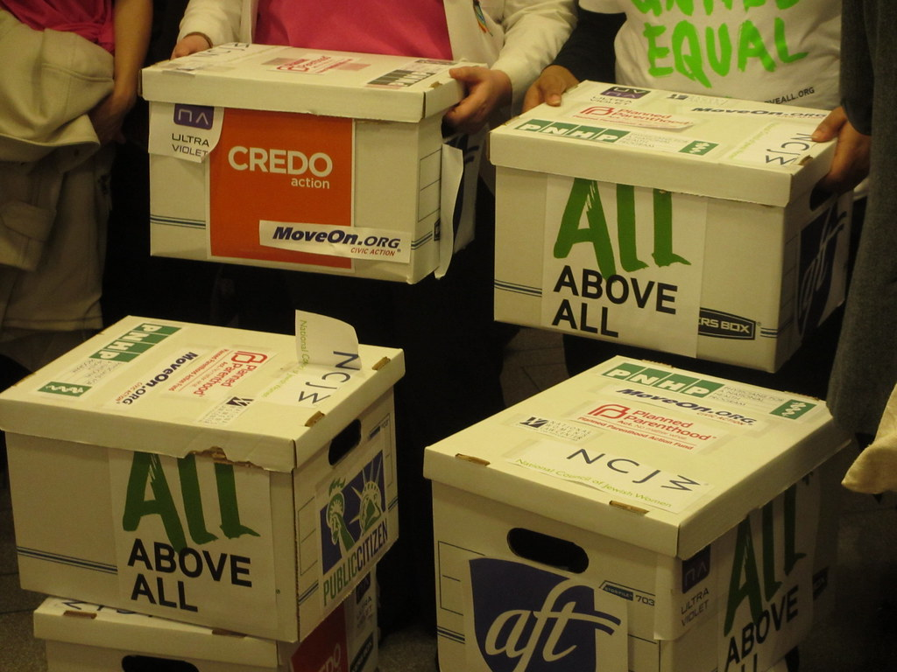
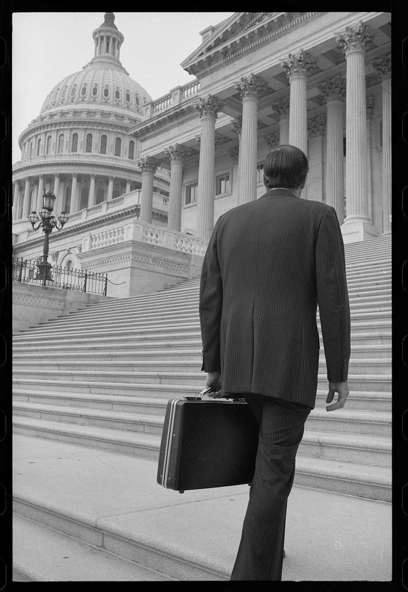

Stealing Petitions: Needing to achieve about 200,000 signatures to a position in order to raise the concern to the voters, non-profit groups hired companies to help them gather signatures. But, the oil industry wanted to halt this notion, so they bribed the companies that the climate activists were working with to steal the petitions.

Lobbyist Spending: The Oil Industry outspends climate activists 50 to 1, with high amounts of this being spent on lobbying politicians to have the laws and regulations be in favor of oil. With this, many politicians are unwilling to change their stance because they are constantly pressured by the oil industry.

Agreements with Politicians: Representative Jared Polis gathered support from his district to have multiple anti-fracking ballot initiatives sent to the government. Before it was announced, Rep. Polis created a backdoor negotiation with Governor Hickenlooper where they agreed to drop these ballot initiatives, which would bring the issue to the voters, and instead create a “Blue Ribbon Commission” that would handle the issue.
Petition Foul Play: While climate activists were out in public gathering signatures for their petitions, oil and gas companies would pay locals to argue, harass, and follow the activists. This made it increasingly more difficult to gather followers and shows the lengths the industry will go to prevent any chance of them losing power.